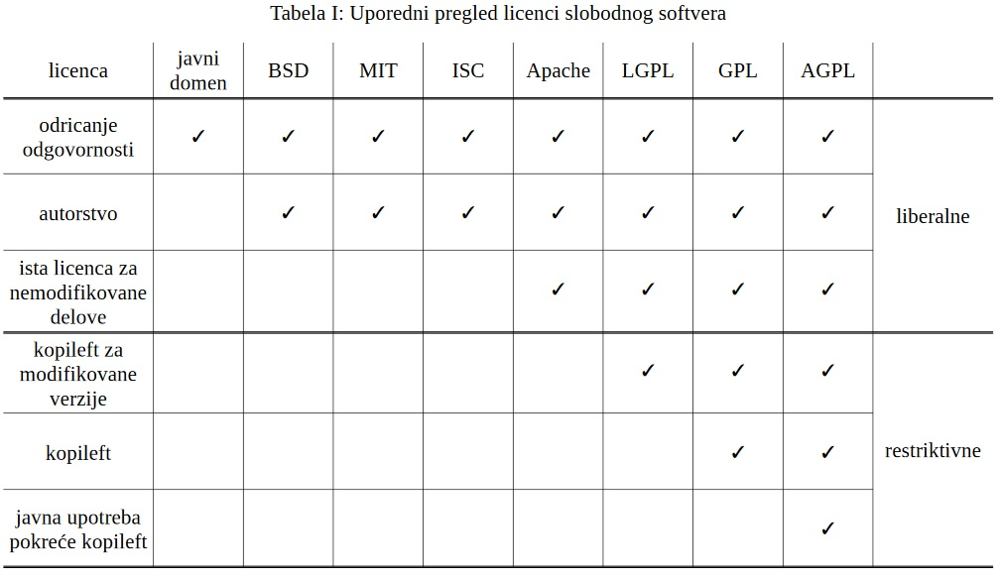

Kao prateći deo otvorenih podataka, moguće je deliti i softverski kod. Prvobitna namena CC licenci nije za softverski kod, već je generalna, a kako je u nekim situacijama pogodnije odabrati licencu koja je posebno namenjena softverskom kodu onda nije preporučljivo koristiti CC. Najpoznatiji veb-baziran hosting servis GitHub (Microsoft-parent, GitHub Inc., San Francisco, USA) je čak napravio za svoje korisnike sajt https://choosealicense.com/ čiji automatski upitnici mogu biti od koristi programerima prilikom odabira licence za softver. Najveća mana GitHub i Gitlab hosting servisa je što sve što je smešteno tamo nema trajne identifikatore i nije pretraživo (za više informacija pogledati Trisovic, Ana, et al. "Advancing computational reproducibility in the Dataverse data repository platform". 2020, arXiv preprint arXiv:2005.02985).
Korisno uputstvo za odabir licence slobodnog softvera se može naći i na sajtu Fondacije za slobodan softver (eng. Free Software Foundation, skraćeno FSF) i to u članku "How to choose a license for your own work". Ovde je važno napomenuti da se ne mora koristiti isti repozitorijum ili hosting servis za podatke i za softverski kod, kao i da se licenca koja se dodeljuje podacima i softverskom kodu može razlikovati. O odabiru licenci, postoji i rad na srpskom jeziku predstavljen na PSSOH (Primena Slobodnog Softvera i Otvorenog Hardvera) konferenciji 2020. godine pod nazivom "Licence slobodnog softvera i otvorenog hardvera - kratko uputstvo za nestrpljive -" Tekst je dostupan u otvorenom pristupu: https://doi.org/10.5281/zenodo.4210351, a video snimak predavanja na engleskom jeziku je dostupan na YouTube linku. Tabela koja pruža uporedni prikaz licenci softverskog koda iz ovog rada je prikazana:

Trenutno postoji više inicijativa za re-definisanjem FAIR principa tako da budu primenljivi i na softver, a ne samo na podatke (za više informacija pogledati Lamprecht, Anna-Lena et al. "Towards FAIR Principles for Research Software". 2020: 37 – 59, doi: 10.3233/DS-190026). Zvanični stav Fondacije za slobodan softver može se naći u konferencijskom govoru na temu Free Software for Open Science.
O CC licencama koje se koriste za otvorene podatke, pogledati prethodni članak Autorska prava.